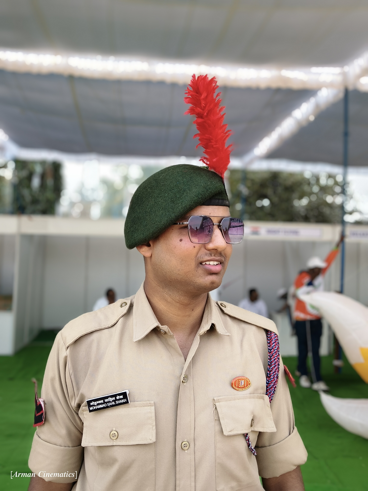
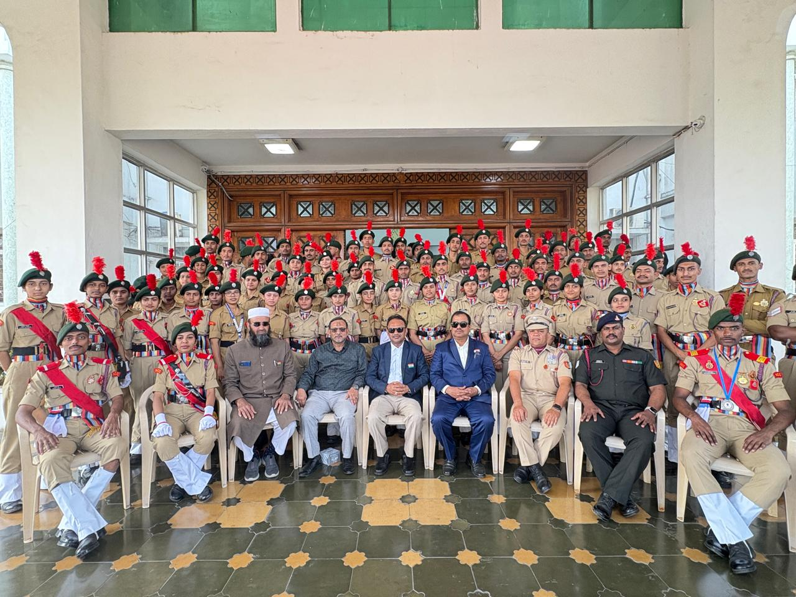
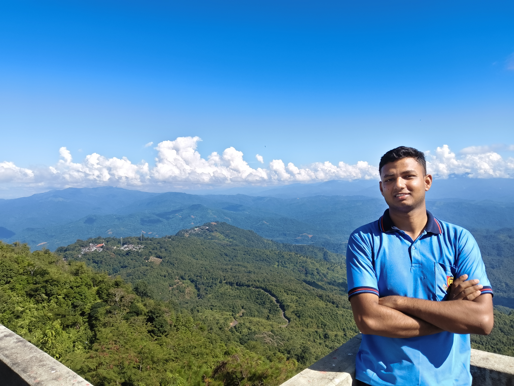

NCC C Certificate holder with B Grade and currently preparing for C Certificate examination. Served as Guard Commander with the most guard commanding experience in my university unit. Awarded for excellence in photography and videography during NCC activities.
Participated in Annual Training Camp (ATC) and NER Track Camp in Nagaland (Wokha District). Dedicated to leadership, discipline, and service with 2+ years of NCC experience.



Successfully completed NCC B Certificate with B Grade. This certificate demonstrates proficiency in basic NCC training, drill, and discipline.
Currently preparing for NCC C Certificate examination. The C Certificate is the highest level in NCC, testing advanced leadership, military subjects, and fieldcraft.
Appointed as Guard Commander with the most guard commanding experience in the university NCC unit. Responsible for leading guard duties and ensuring discipline.
Currently holding the rank of Corporal in NCC with leadership responsibilities over cadets
Awarded for best videography in university NCC activities, showcasing documentation skills
Received best photography award during NER Track Camp in Nagaland for capturing camp moments
Recognized for exceptional leadership skills during camps and regular NCC activities
Held the record for most guard commanding duties in university NCC unit
Successfully completed ATC and NER Track Camp with excellent performance reviews
Awarded by university for exceptional videography skills in documenting NCC activities and events
Received at NER Track Camp in Nagaland for capturing memorable moments and camp activities
Recognized for outstanding performance as Guard Commander with most commanding duties
Acknowledged for exceptional leadership skills during camps and regular NCC training
Enrolled in NCC as a cadet, beginning with basic training, drills, discipline, and understanding of NCC principles and values.
Successfully completed NCC B Certificate examination with B Grade, demonstrating proficiency in basic NCC training.
Promoted to the rank of Corporal after demonstrating leadership potential, discipline, and commitment to NCC activities.
Attended ATC at Malla Reddy College, undergoing intensive training in drill, weapon handling, leadership, and adventure activities.
Appointed as Guard Commander with responsibilities for leading guard duties, eventually holding record for most commanding.
Selected for NER Track Camp in Nagaland's Wokha District, experiencing adventure training and cultural exchange in North East India.
Received multiple awards for photography/videography and currently preparing for NCC C Certificate examination.
Awarded by university for best videography in NCC activities, documenting events and creating promotional content
Received best photography award during NER Track Camp in Nagaland for capturing camp moments and activities
Recognized for holding the record of most guard commanding duties in university NCC unit
Acknowledged for exceptional leadership skills during camps and regular NCC training activities